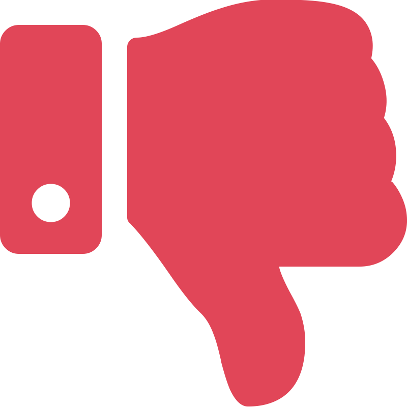
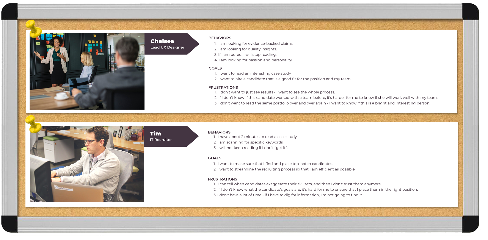
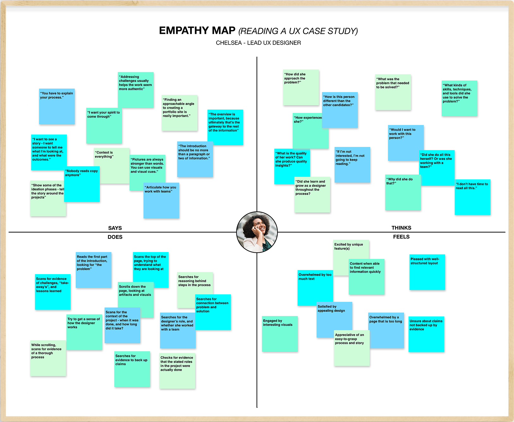

42%
found page
was not engaging
To improve the usability of my case studies in order to better appeal to target users
May 20, 2018 - present
Myself
(For an example of my work for an external client, check out my case study about Pamela Simpson's Salon Website)
I worked individually
(For an example of my work on a team, check out my case study about the Collective Conscience app)
User Researcher, User Testing, UX Design
Heuristic Evaluation, User Empathy, User Testing, Wireframing, Prototyping

Yes, you read that right. This is a case study about improving this case study. I know, it’s a bit of a mind-bender. I like to think of it this way:
I had a UX portfolio that wasn’t working; I wasn’t getting as many call-backs as I’d like during my job search. I suspected that it had a lot to do with my portfolio website, and specifically the case studies. Truthfully, I should have paid more attention to the case studies during my first two rounds of design. The primary reason to create a portfolio website is to provide a medium to showcase your best work. While I had conducted three user interviews with UX hiring managers back in October, I felt that I had not adequately reflected my findings in my design, and was not catering to their needs. If I wanted a better response to my job applications, I needed to impress and delight UX hiring managers and recruiters with my case studies.
So, I decided to “hire” myself as a UX Designer to diagnose and fix the problem(s). After all, that is my job. Keep reading to find out how I approached the problem.
In considering where I had gone wrong in my past designs, I could tell right away that I had lost sight of my target users. I had all the data I needed from interviews I conducted in October 2017, but I had overlooked a lot of it. So, to get myself back on track and refocus on the user, I started this project by creating personas for my two main target users.
To create the personas, I used information that I had collected during user interviews with three UX hiring managers. I also conducted online research to get a better idea of what a recruiter might be looking for in a UX case study.
Of these two personas, I wanted to concentrate on the UX Hiring Manager more thoroughly. It would be a hiring manager who would be more invested in reading my case studies, and a hiring manager to whom I would likely present my case studies (if I got an interview). With that in mind, I created an empathy map that would enhance my understanding of the UX Hiring Manager as a target user.
From the empathy map, I could begin to see where I had gone wrong with my previous designs. Going forward, I would need to ensure that my case studies are:
To avoid making assumptions about what was wrong (and right) with my current case study design, I conducted user interviews and testing. Unfortunately, I had limited resources to gather testers, so I had to do some “guerrila” testing. I conducted three 30-minute interviews, and had 12 people take a series of six simple user tests. Both my time and money was limited, so I had to find family and friends to participate in this round of testing. However, the insights they gave me showed me to ways in which I could improve the usability of the site for all users, UX hiring managers and recruiters included.
42%
found page
was not engaging
>1 min
avg. time
to find a keyword
33%
unable to understand
at a glance
Testing results showed me that almost half of users were uninterested in the content of my case study, and a third had difficulties understanding the purpose of the page. It took testers an average of over one minute to find evidence of key words and concepts that a hiring manager or recruiter would surely be looking for, such as “prototype”, my role in the project, whether I worked with a team, and whether I learned anything from the project. These statistics certainly demonstrated that I had neglected to design around my target users.
While my user tests uncovered several major issues, they did not reveal why the issues existed. To find out, for example, why users were uninterested in the page, I needed to do some interviews. During my three interviews, two quotes especially stood out to me:
“After reading the first paragraph, I don’t want to keep reading. I can see that the page is really long, but I have no idea what’s coming next. It just feels overwhelming.”
“I can’t find anything - there’s so much text and it’s so small. I’d have to read this whole thing from beginning to end to find out whether you worked with a team.”
With the results of my user testing and interviews in mind, I proceeded to redesign my case study. I started with skectches, then gathered my best ideas into a wireframe of the page. From there, I created a high-fidelity prototype. Throughout this process, I integrated the findings from my user testing into my design choices: